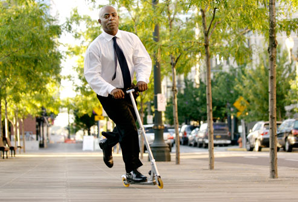

-El scooter for fremtiden
Gjersrud-Stensrud brer seg ut over 4 km2 og med kun to t-banestopp i bydelen er det et behov for å utvide fremkommeligheten til innbyggerne. Vi har valgt å fokusere på bevegelsesfrihet innad i bydelen og ønsker å gi innbyggerne et tidseffektivt tilbud for å komme seg til knutepunktene for videre kollektivtransport. På sitt bredeste og på sitt lengste vil bydelen strekke seg opp mot 3 km, og for å skape bærekraftig bevegelsesfrihet foreslår vi at det settes opp stativer med el-sparkesykler spredt utover ulike områder der det er nødvendig med en ekstra transportmulighet. Dette vil være aktuelt rundt områder med høy konsentrasjon av folk, som rundt t-banestopp, bussholdeplasser, torg og møteplasser, men også i områder der det er langt til nærmeste holdeplass. For å motivere til helårsbruk anbefaler vi at sykkelstier og traseer er oppvarmet eller holdes snø- og isfri og/eller montering av piggdekk på el-sparkesyklene.